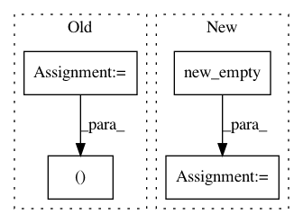

fab47fcca9887402f7474c80545311fcb952566f,torch_geometric/transform/random_shear.py,RandomShear,__call__,#RandomShear#Any#,8
Before Change
def __call__(self, data):
mean = data.pos.mean(dim=0)
pos = data.pos - mean
dim = pos.size(1)
shear = torch.rand(dim, dim) * 2 * self.max - self.max
range = torch.arange(0, dim, out=torch.LongTensor())
shear[range, range] = 1
shear = shear.type_as(pos)
pos = torch.matmul(shear, pos.view(-1, dim, 1))
After Change
def __call__(self, data):
dim = data.pos.size(1)
matrix = data.pos.new_empty(dim, dim).uniform(-self.scale, self.scale)
eye = torch.arange(dim, dtype=torch.long)
matrix[eye, eye] = 1
return LinearTransformation(matrix)(data)
In pattern: SUPERPATTERN
Frequency: 3
Non-data size: 4
Instances
Project Name: rusty1s/pytorch_geometric
Commit Name: fab47fcca9887402f7474c80545311fcb952566f
Time: 2018-05-21
Author: matthias.fey@tu-dortmund.de
File Name: torch_geometric/transform/random_shear.py
Class Name: RandomShear
Method Name: __call__
Project Name: open-mmlab/mmcv
Commit Name: 48d990258549ca626fcf8c34488c00ed6fce108a
Time: 2021-02-26
Author: z55250825@163.com
File Name: mmcv/ops/nms.py
Class Name:
Method Name: soft_nms
Project Name: rusty1s/pytorch_geometric
Commit Name: 6437d4e459e0f56e059ef0400c03852ef91b8a32
Time: 2018-08-13
Author: matthias.fey@tu-dortmund.de
File Name: torch_geometric/nn/pool/consecutive.py
Class Name:
Method Name: consecutive_cluster